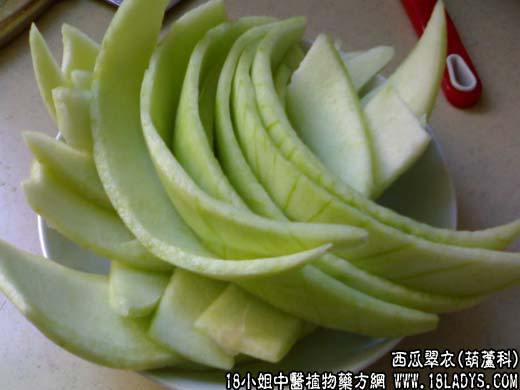

【中药概述】西瓜翠衣为葫芦科草本植物西瓜的外层果皮。甘、淡寒。归心、胃经。 清热解暑：用于暑热烦渴、小便短赤等症。善清暑热，解烦渴，且能利水，可配青蒿，荷叶等同用。如（<温病条辨>清络饮：鲜荷叶边，鲜银花，西瓜翠衣，鲜扁豆花，丝瓜皮，鲜竹叶心）。 【药理作用】西瓜皮有利尿、降压作用。 【化学成分】含蜡质、葡萄糖、灰分，氨基酸、苹果酸及番茄素、维生素C等。 【用量用法】本品10——100g，水煎服，或入剂，或鲜品服用。
本文解释权归中药大全，本文地址： https://www.daquan.com/post/1832.html